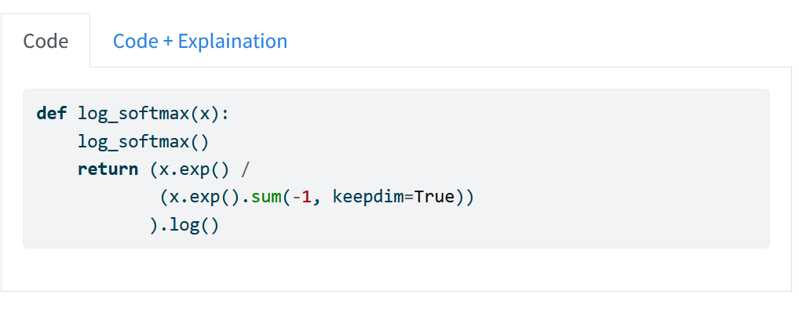
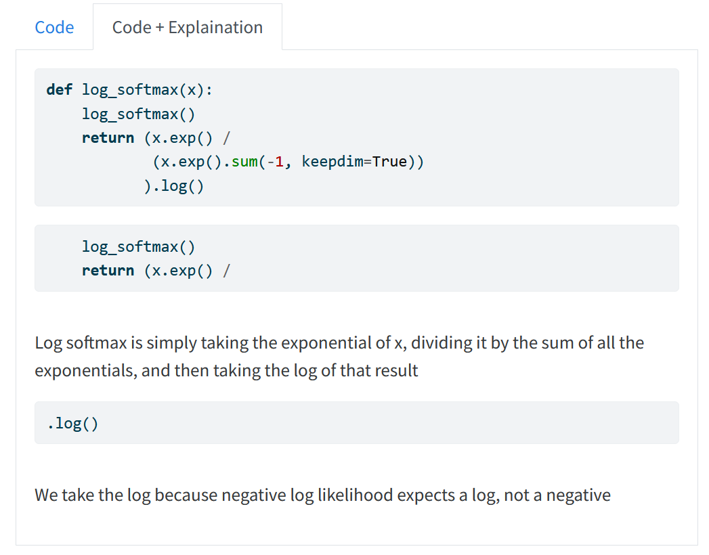

def addition(a,b):
"Adds two numbers together"
return a+bCode Notes
Pipeline for annotating code cells with notes
Code notes operate by annotation notes in an exploratory fashion. It involves a simple two step process:
- Write the code you want to annotate in a code cell:
def addition(a,b):
"Adds two numbers together"
return a+bNote: In this example it is a function, but this could be any code whatsoever. Variable definitions, quick oneliners in Jupyter, it does not matter!
- In subsequant cells, include an explaination for each line while following the following template:
explain {{code to highlight}} {{instance number of code occuring}}
This is my explanationFor example, I could have:
explain a+b
We take the sum of a and b, which is written in python with the "+" symbolOr, if the code you wish to explain is multiple lines, you can select between which code to highlight such as:
explain multiline (a,b) 0 return a+b 0
This function takes the two inputs (a and b) and returns their sumThe zeros in these tags (0) are instance numbers for these parts. So if code is repeated in the block group, you can specify which particular subset the note belongs to.
These then get rendered together later as notes when calling build_notes from the CLI, and can be viewed on the documentation website.
These notes are rendered as a two-block column, with the first showing just the code, and the second showing the code and snippets below it with each explanation.
See an example now:


make_panel_tabset
make_panel_tabset ()
Creates a templated panel tabset for Quarto
convert_explanation
convert_explanation (explanation_cell, source)
Takes an explanation and source code and linkes them together in a new cell
extract_code
extract_code (start_code, end_code, source, instance_num, end_instance_num=0)
Finds code between start and finish potentially with instances to check
parse_code
parse_code (code_cell, markdown_cell)
Parses directives to extract the code needed to be highlighted
NoteExportProc
NoteExportProc (nb)
A proc that checks and reorganizes cells for documentation for proper explainations
parse_notes
parse_notes ()
Exports notebooks to parsed notes for documentation. Should be called in the workflow, not yourself!
To use this, add nbdev-extensions as a requirement in your settings.ini and add in the procs, such that:
requirements=nbdev-extensions
procs =
nbdev_extensions.codenotes:NoteExportProcNow it will automatically build your docs like notes!
def addition(a,b):
"Adds two numbers together"
return a+ba+bWe return the sum of a and b
returnReturn something